4.10 Bar Charts and Pie Charts via geom_bar()
For visualizing the relationship between two continuous variables, we have been learned various kinds of plots, including scatterplot (Sections 4.2 and 4.3), smoothline fit (Section 4.4), and line plot (Section 4.7).
In this section, we will introduce two new kinds of plots, called bar chart and pie chart. A bar chart uses rectangular bars with heights or lengths proportional to the values they represent, in order to visualize a discrete variable. A pie chart divides a circle into slices to represent numerical proportions.
4.10.1 An Introduction to Bar Chart
In the sahp dataset, you may be interested in the distribution of kitchen quality of the house (denoted in the kit_qual variable). To generate a bar chart, you can use the function geom_bar().
library(ggplot2)
library(r02pro)
ggplot(data = sahp) +
geom_bar(mapping = aes(x = kit_qual))
In the bar chart, the x-axis displays different values of kit_qual, and the y-axis displays the number of observations with each kit_qual value. To verify this, let’s check how many house have kit_qual equals Excellent.
sum(sahp$kit_qual == "Excellent")
#> [1] 14We can see the answer 14 matches the value on the bar chart.
You may have noticed that the y-axis count is not a variable in sahp! This is also the reason that we don’t need to specify the y argument in the aes() function. In this sense, bar charts are very different from many other graphs like scatterplots, which plot the raw values of datasets.
Sometimes, we would like to find out the proportion for each value of x, then we can display a bar chart of proportion, rather than count. To do this, we need to add y = stat(prop) and group = 1 as additional arguments in the aes() function. The stat(prop) is a statistical function used to calculate proportions. The group = 1 implies that all the observations belong to one single group when calculating the proportions. We will try to set group to another variable in the next part.
ggplot(data = sahp) +
geom_bar(mapping = aes(x = kit_qual,
y = stat(prop),
group = 1))
In addition to relying on geom_bar() to compute the frequencies or the proportions, we can also manually use the frequencies or proportions if we have the information in a data frame. Let’s first create a data frame that contains the frequencies and proportions of each kit_qual value.
freq <- table(sahp$kit_qual)
prop <- freq/nrow(sahp)
kit_qual_stat <- data.frame(kit_qual = names(freq),
freq = as.vector(freq),
prop = as.vector(prop))
kit_qual_stat
#> kit_qual freq prop
#> 1 Average 85 0.51515152
#> 2 Excellent 14 0.08484848
#> 3 Fair 9 0.05454545
#> 4 Good 57 0.34545455Now, you can directly use the data frame kit_freq to generate the bar chart. Here, you need to set x = kit_qual and y = freq in aes(), and stat = "identity" as an argument in the geom_bar() function. To use proportions instead of frequencies, you can use y = prop instead of y = freq.
ggplot(kit_qual_stat) +
geom_bar(aes(x = kit_qual, y = freq),
stat = "identity")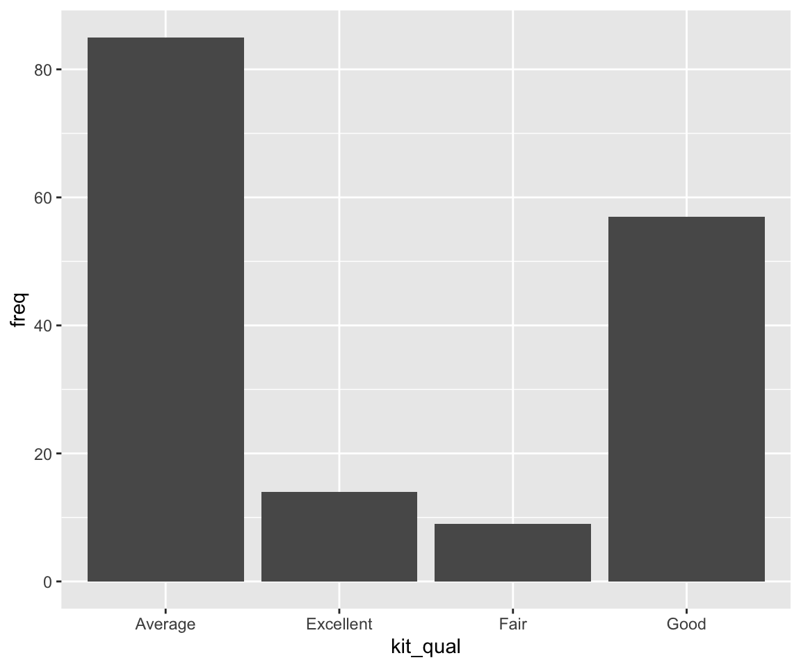
ggplot(kit_qual_stat) +
geom_bar(aes(x = kit_qual, y = prop),
stat = "identity")You can easily check that the plots are identical to the previous bar charts.
4.10.2 Reordering Bars in Bar Charts
In our bar chart example, the bars are ordered alphabetically. Sometimes, we may want to reorder the bars according to certain criterion.
a. Reorder in ascending/descending order of heights
To order the bars in ascending/descending order of their heights, you can use the fct_reorder() function to reorder the factor.
library(forcats)
ggplot(data = sahp) +
geom_bar(mapping = aes(x = fct_reorder(kit_qual,
kit_qual,
length))) #increasing order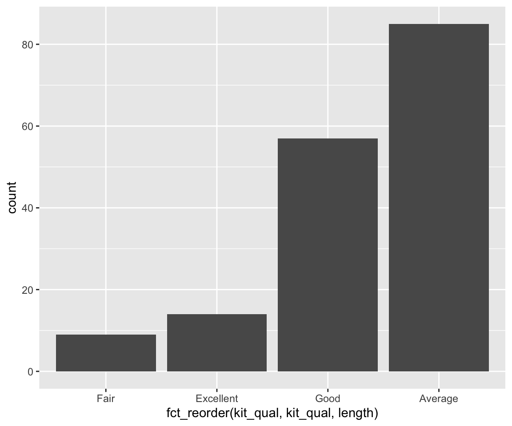
The above code reorders the bar chart to the increasing order of their heights. The fct_reorder() is a very powerful function used to record the levels of a factor. The function fct_reorder(.f, .x, .fun = median) has three arguments:
.f: the discrete variable/factor to reorder.x: one variable.fun: the function to be applied to.x
The levels of f are reordered so that the values of .fun(.x) are in ascending order. In our example, we reorder the levels of kit_qual such that the length of kit_qual is in ascending order, i.e. the bars are in ascending order of their heights.
To reorder in descending order of heights, you can add and additional argument .desc = TRUE in the fct_reorder() function.
ggplot(data = sahp) +
geom_bar(mapping = aes(x = fct_reorder(kit_qual,
kit_qual,
length,
.desc = TRUE))) #decreasing order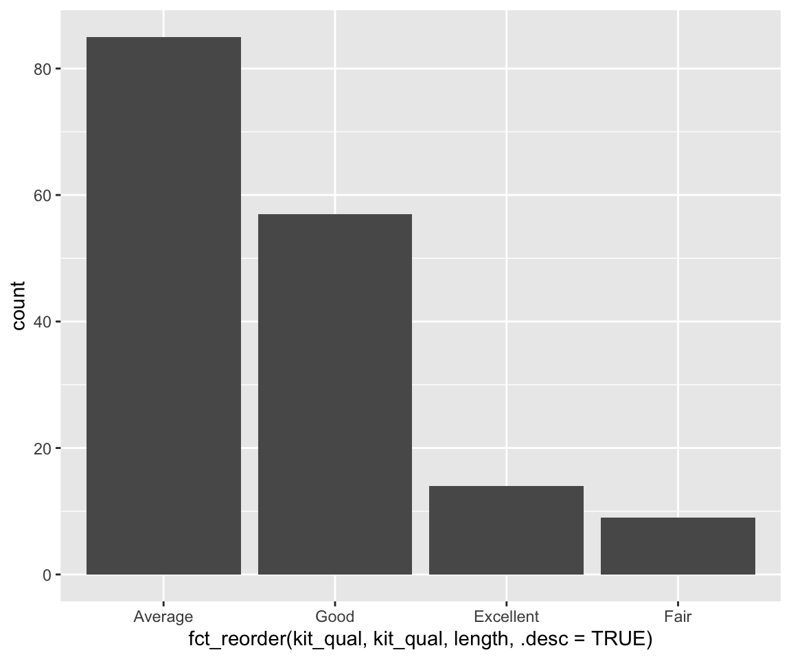
b. Manual Reorder
In addition to reordering according to certain function values, you can use the function fct_relevel() to manually reorder the bars in a bar chart. In our example of kit_qual, perhaps a common thought is to order the levels from the worst quality to the best quality.
ggplot(data = sahp) +
geom_bar(mapping = aes(x = fct_relevel(kit_qual,
c("Fair",
"Average",
"Good",
"Excellent"))))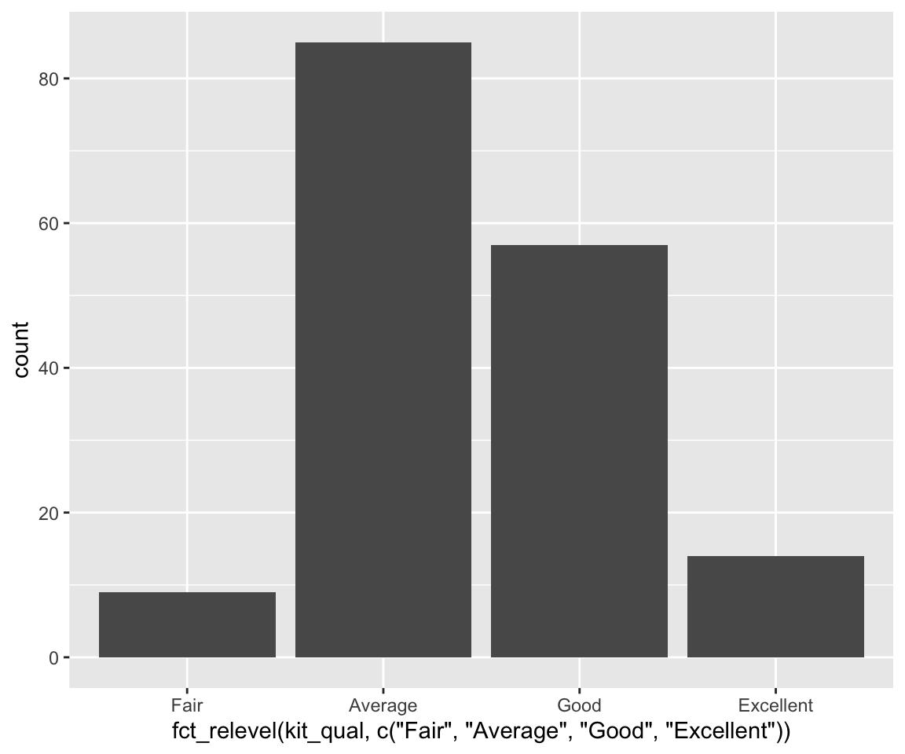
As you can imagine, the second argument of fct_relevel() contains the desired order of the factors, which will be reflected in the order of the bars.
4.10.3 Aesthetics in Bar Charts
As before, we can use aesthetics to control the appearance of bar charts.
First, let’s look at a new aesthetic called fill, which fills the bar with different colors according to the value of the mapped variable (usually another discrete variable). Here, we want to look at the distribution of kit_qual for different values of central_air.
ggplot(data = sahp) +
geom_bar(mapping = aes(x = kit_qual, fill = central_air))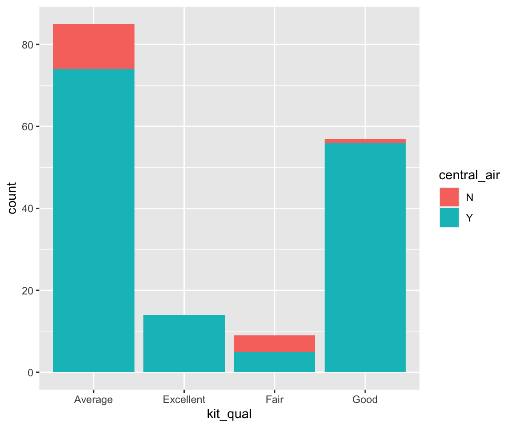
We can see that each bar is divided into stacked sub-bars with different colors. The different colors in each sub-bar correspond to the value of central_air. And the height of each sub-bar represents the count for the cases with a particular value of kit_qual and another value of central_air.
Let’s verify the first bar.
sum(sahp$kit_qual == "Average" & sahp$central_air == "Y")
#> [1] 74Clear, the result matches the blue portion of the first bar.
When we map a variable to the fill aesthetic, the appearance of different subbars can be customized using the position argument as a global aesthetic in geom_bar().
a. stacked bars
The default value of the position argument is "stack", which generated a collection of stacked bars with different colors.
ggplot(data = sahp) +
geom_bar(mapping = aes(x = kit_qual, fill = central_air),
position = "stack")b. dodged bars
Using the stacked bars, it is sometimes difficult to compare the counts for different subbars. To make the comparison easier, you can use position = "dodge".
ggplot(data = sahp) +
geom_bar(mapping = aes(x = kit_qual, fill = central_air),
position = "dodge")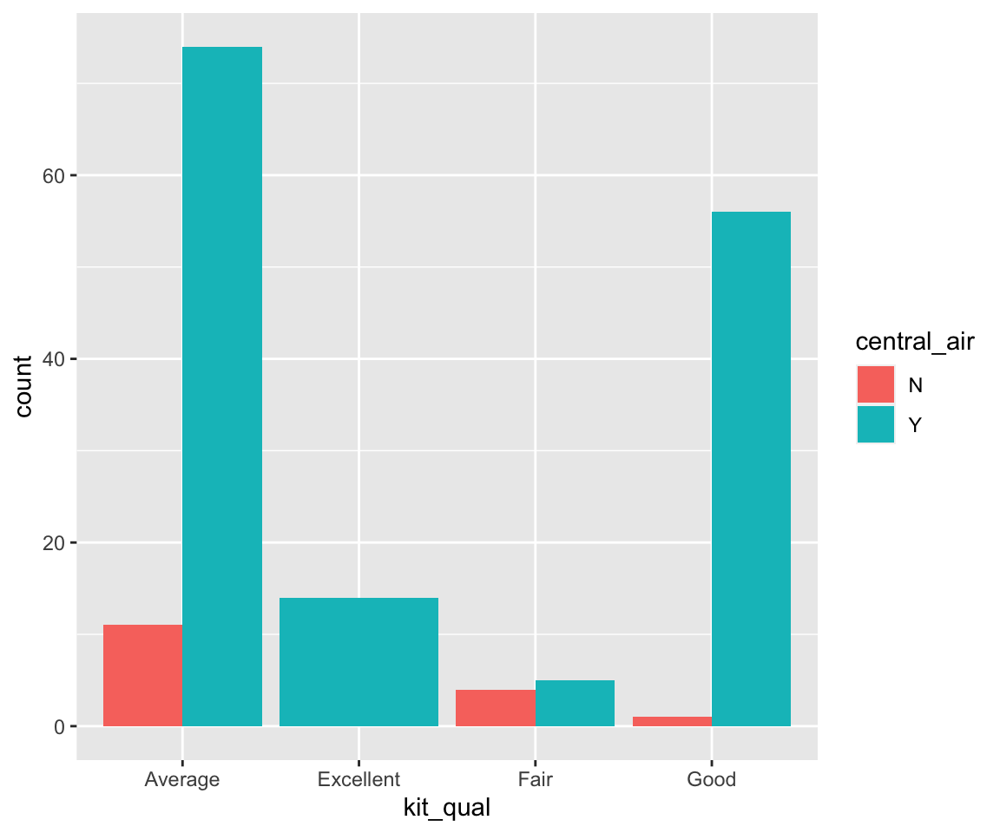
Now, the plot places the sub-bars beside one another, which makes it easier to compare individual counts for each combination of kit_qual and central_air.
c. filled bars
ggplot(data = sahp) +
geom_bar(mapping = aes(x = kit_qual, fill = central_air),
position = "fill")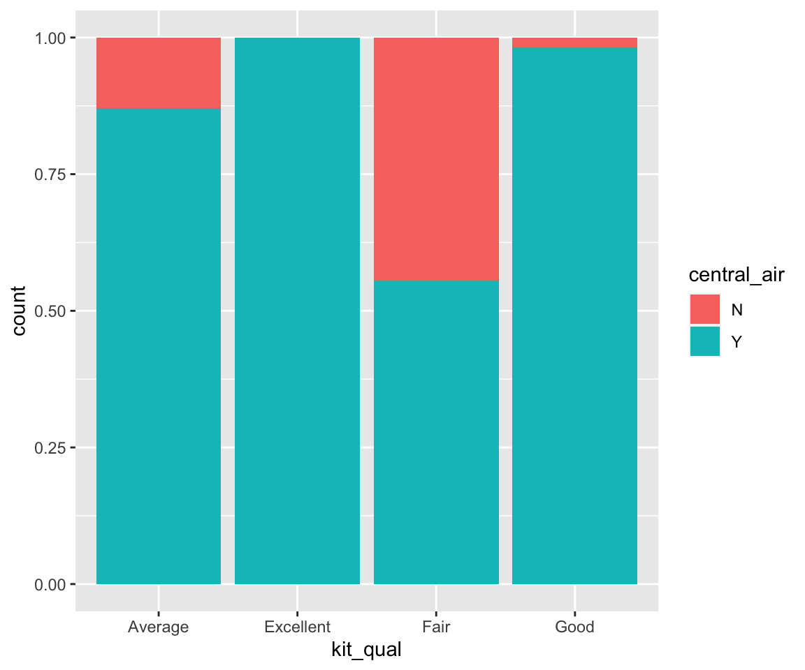
position = "fill" works like stacking, but makes each set of stacked bars the same height. The y axis should be labeled as “proportion” rather than “count.” This makes it easier to compare proportions of different values of central_air for different values of kit_qual. For example, we can see that the proportion of central_air = TRUE is much higher for kit_qual = "Good" than that for kit_qual = "Fair".
Lastly, you can also use the polar coordinates.
ggplot(data = sahp) +
geom_bar(mapping = aes(x = kit_qual)) +
coord_polar()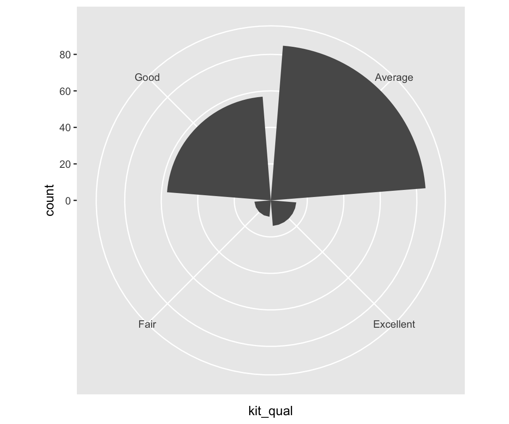
4.10.4 Pie Charts
It turns out pie charts can be generated in a similar fashion as bar charts, by adding an argument in the geom_bar() function. Let’s try to generate a pie chart for kit_qual. The idea is to first generate a single stacked bar with each sub-bar corresponding to different kit_qual values.
ggplot(kit_qual_stat) +
geom_bar(aes(x = "", y = prop, fill = kit_qual),
stat = "identity")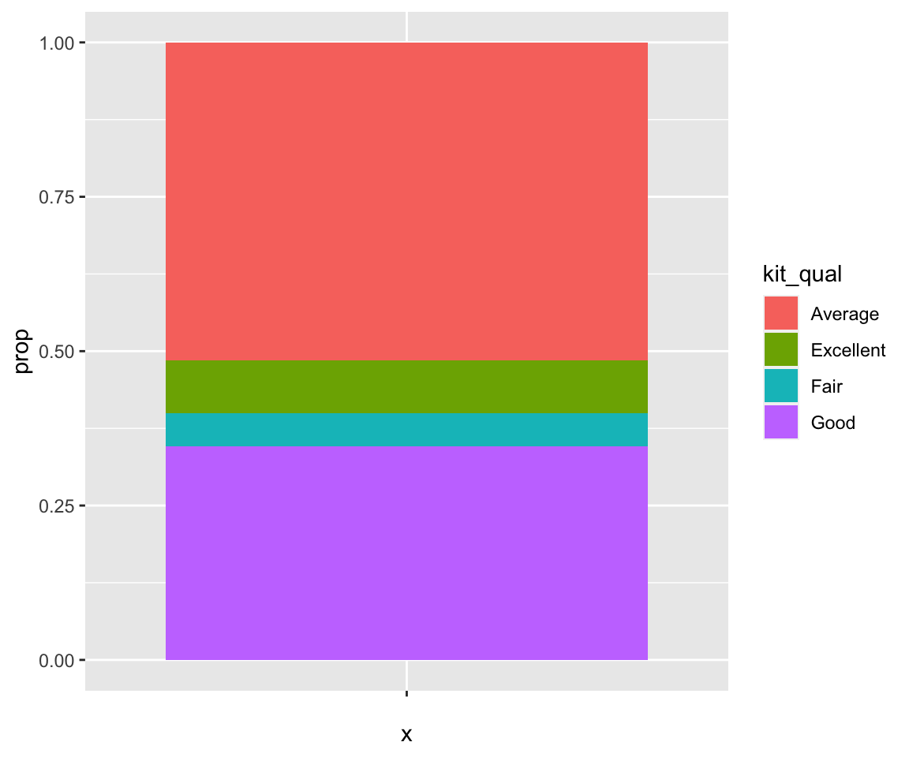
Then, to get a pie chart, you just need to add an additional layer to change the coordinates from Cartesian into polar coordinates using the coord_polar() function.
ggplot(kit_qual_stat,
aes(x = "", y = prop, fill = kit_qual)) +
geom_bar(stat = "identity") +
coord_polar("y") +
theme_void()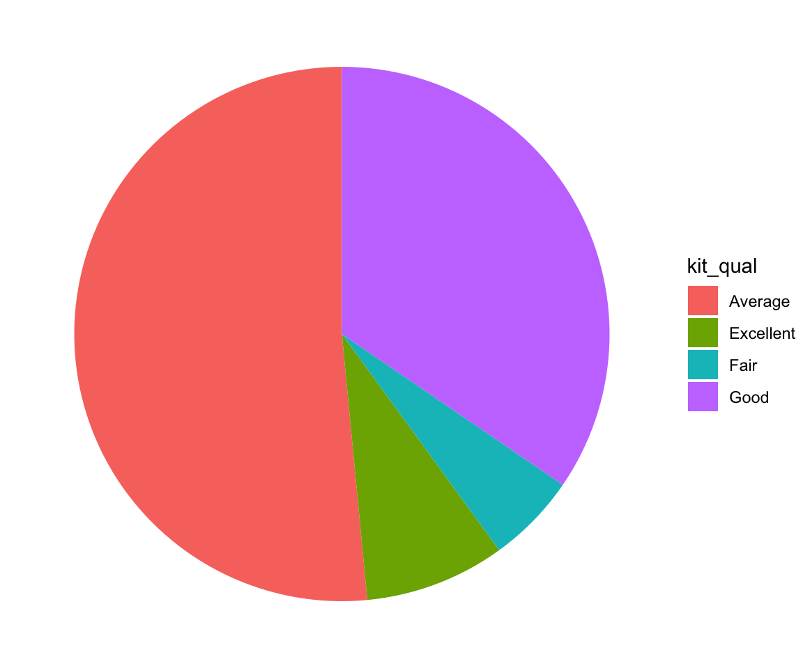
Sometimes, you may want to add texts on to the pie chart to represent the percentages of each category. You can do that by using the geom_text() function with label and position arguments specified.
ggplot(kit_qual_stat,
aes(x = "", y = prop, fill = kit_qual)) +
geom_bar(stat = "identity") +
geom_text(aes(label = round(100*prop, 2)),
position = position_stack(vjust = 0.5)) +
coord_polar("y") +
theme_void()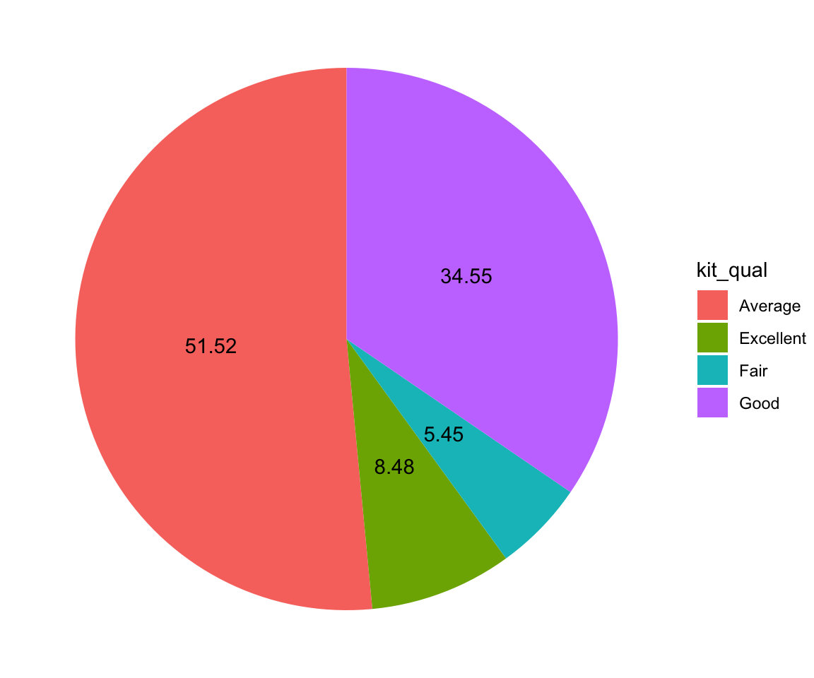
4.10.5 Exercises
Use the sahp data set to answer the following questions.
Create a bar chart to represent the distribution of the number of available car spaces in the garage (
gar_car).For the bar chart in Q1, divide each bar into sub-bars according to whether
oa_qual > 5. What findings do you have in this plot?For the bar chart in Q2, change the position of the sub-bar to reflect the proportion for
oa_qual > 5for each value ofgar_car.Create a pie chart to represent the distribution of the number of available car spaces in the garage (
gar_car) with the corresponding percentages displays inside the pie chart.